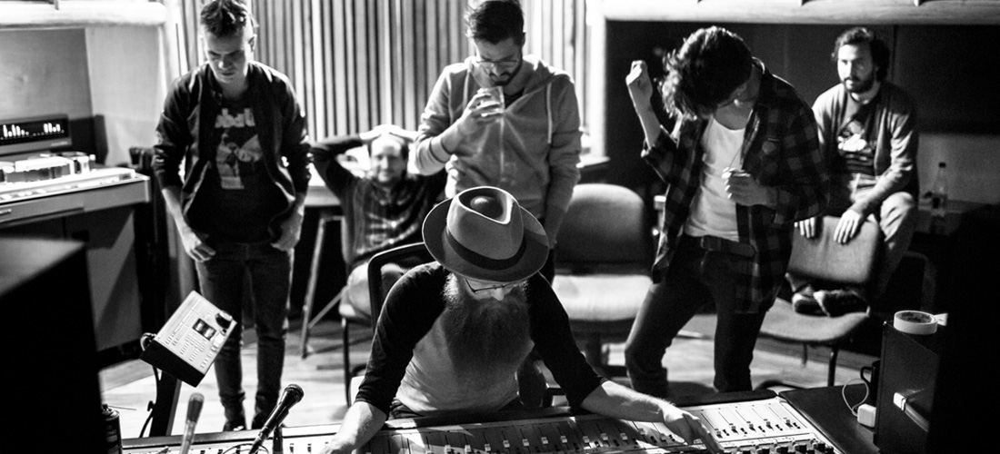

Sobre Nosotros
Scroll down for the English version
Diamante Eléctrico es Juan Galeano (Vocalista, Bajo), Daniel Álvarez (Guitarra), y Andee Zeta (Batería), tres músicos de Colombia, a quienes, Bob Lefsetz describió así: suena como una fusión de Green Day y Muse, con un toque de Led Zeppelin.
Desde sus comienzos en el 2013, la banda se ha convertido en uno de los grupos más importantes dentro la escena musical independiente en Colombia.
La banda lanzó su primer Álbum, Diamante Eléctrico en el 2013, subsidiándolo a través de una campaña de Kickstarter, lo cual convirtió al grupo en la primera banda Colombiana en lograr esto. Cuando el público conoció su rock crudo y matices de blues, no lo podían dejar de escuchar. El segundo sencillo Nos Rompemos Igual alcanzó la posición #1 en los listados de la radio Colombiana.
A finales del 2014, la banda lanzó su exitoso segundo Álbum llamado "B". La gira los llevó a escenarios como Vive Latino, Rock al Parque, The LAMC y más. Esta producción gano el Grammy Latino en la categoría a "Mejor Álbum de Rock". El grupo compartió escenarios con The Foo Fighters y The Rolling Stones, ese mismo año.
Su nuevo Álbum, "La Gran Oscilación", salió mediados de octubre del 2016. Este Álbum fue grabado en Bogotá, de manera completamente análoga y con la ayuda del ingeniero Joshua Smith (Jack White, The Raconteurs). Juan Galeano, vocalista de la banda, afirma que el Álbum es además experimental y conceptual.
Sobre "Placebo", primer sencillo de la grabación el guitarrista Daniel Álvarez agrega que es un buen ejemplo del resto del Álbum, porque todas las canciones las escribimos juntos. Los temas "Déjala Rodar" y "Luz Secreta" también incluidos en este lanzamiento han contado con el apoyo y reconocimiento de los medios y seguidores del grupo en EE.UU, México y Colombia.
Apoyando el lanzamiento de "La Gran Oscilación la banda se encuentra de gira, prometiendo una gran descarga eléctrica.
English version
Diamante Eléctrico is Juan Galeano (Lead Vocals + Bass), Daniel Álvarez (Guitar), and Andee Zeta (Drums), three musicians from Colombia who Bob Lefsetz once described as "sounds like a cross between Green Day and Muse, with a bit of Zeppelin thrown in". Since their beginning in 2013, they have risen to become one of the most important bands on the independent music scene in Colombia.
Diamante Eléctrico released their self-titled debut album in 2013, which they funded via Kickstarter, becoming the first Colombian band ever to do so. As soon as listeners heard their raw, bluesy rock and roll, they couldn't turn it off. The second single on the album "Nos Rompemos Igual" immediately reached #1 on the radio charts in their native country.
In 2015, the band released their wildly successful album called "B", winner of the "Best Rock Album" category at the Latin Grammys. The album took the band to such prestigious stages as Rock al Parque, The LAMC, Vive Latino, and more. Since their Latin Grammy success, the band has gone on to share stages with The Foo Fighters and The Rolling Stones.
"La Gran Oscilación", to be released in mid October 2016, is the band's third studio album. It was recorded in Bogotá, completely analog, with the help of Third Man Records engineer Joshua Smith (Jack White, Raconteurs). Lead singer Juan Galeano describes the album as "more experimental and conceptual". The first single "Placebo", released in late July, is described by Daniel Alvarez- the band's guitarist as a good example of how the album was written because the album was written by the band as a whole. "Déjala Rodar" and "Luz Secreta", also included in this new release have quickly garnered support and recognition from both media and fans across the USA, Mexico and Colombia.
The band is currently touring with what promises to be a vibrant live show!